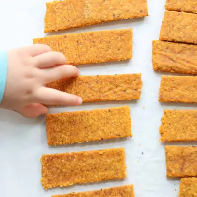

Teething Biscuits

Ingredients
- 2 cups rolled oats (200g)
- 1 cup mashed cooked sweet potatoes (220g)
- 2 tablespoons butter, melted
- 1 tablespoon chia seeds
- 1 teaspoon vanilla extract
- 1/2 teaspoon cinnamon
Steps
- Preheat oven to 350°F. Add oats to a food processor and blend until they turn into a fine flour. Add the rest of the ingredients and blend until a dough forms.
- Using a rolling pin, roll out the dough between two pieces of parchment paper to 1/4-1/2 inch thick.
- Cut into rectangles (I like to use a pizza cutter) or circles or any shapes you wish using cookie cutters. You want them to be easy for little hands to grab.
- Simply lift the bottom parchment paper with the cut out biscuits and transfer to a baking sheet. Bake for 25 minutes, flipping halfway through, until golden brown. Cool on a cooling rack for at least an hour.
- Freeze for at least an hour before serving.
Recipe by Min Kwon · Kidfriendly Meals, from MJ and Hungryman. Saved here for personal use; the original has the full notes, tips and photos. Open original